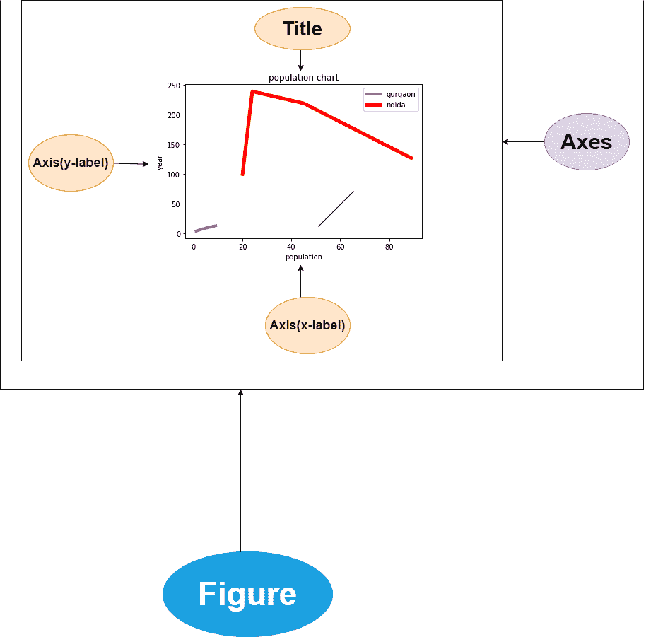
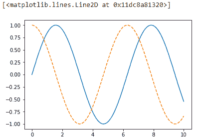

Matplotlib 中的一般概念
原文：https://www.studytonight.com/matplotlib/general-concepts-in-matplotlib
在本教程中，我们将介绍 Matplotlib 中的一些一般概念和的一些提示供您记忆，借助哪个可视化变得容易。
我们知道 Matplotlib 是一个强大的库，用于以图的形式可视化数据。您将在我们的教程中看到，在这个库的帮助下，您可以创建许多类型的图，如线、条形图、直方图、轮廓图、散点图、提琴图等等。用于创建阵列的 2D 图。
这里有一些一般的概念，你必须先了解，然后再继续进一步的主题。使用 matplotlib 创建的图形有许多部分，这里我们将讨论这些部分，它们是:
首先，我们用了“图”字；让我们了解一下什么是 Matplotlib 中的人物？
1.图:
图是创建不同绘图的画布。Matplotlib 图形是包含一个或多个轴/绘图的画布。
2.轴:
一个 Matplotlib 图中的轴是用来生成图极限的，基本上就像一个数线。三维图可以有一个 X 轴、Y 轴和 Z 轴。
3.轴:
Axes 一般被认为是一个图。在 3D 的情况下，有三轴对象但是一个图形中有多轴。
4.艺术家
在图上能看到的一切都是艺术家。大多数艺术家都被绑上了斧头。这些像是文本对象、集合对象和 Line2D 对象等等。

在借助 matplotlib 创建可视化之前；让我们讨论一些与 Matplotlib 库相关的事情:
1.导入 Matplotlib 库
在我们的代码中导入 Matplotlib 时，我们将使用一些标准的简写:
import matplotlib as mpl
import matplotlib.pyplot as plt
 The
The plt interface mentioned above is used often in our further tutorials.
2.设置样式
因此，我们将使用plt.style指令为我们的人物选择合适的美学风格。
现在，让我们设置经典风格，确保我们创建的情节使用经典的 Matplotlib 风格:
plt.style.use('classic')
3.显示图
地块的显示方式取决于您如何使用 Matplotlib 库。
您可以使用 Matplotlib 创建三个适用的上下文:脚本中的、T2 IPython 笔记本中的或 T4 IPython Shell 中的。
根据脚本绘图:
如果你在脚本中使用 matplotlib ，那么plt.show()函数就是你的好朋友。此功能启动一个事件循环，然后查看所有当前活动的图形对象，并打开一个或多个交互窗口，显示您的图形或图形。
注 :在每个 Python 会话中plt.show()命令只能使用一次，并且最常出现在脚本的末尾。
您不能使用多个show()命令，因为如果您愿意，它将会导致不可预测的依赖后端的行为。因此应该尽量避免。
**让我们以一个名为myplt.py的文件为例，其中的代码如下:
import matplotlib.pyplot as plt
import numpy as np
x = np.linspace(0, 10, 100)
plt.plot(x, np.sin(x))
plt.plot(x, np.cos(x))
plt.show()
在命令行提示符下运行上述脚本，使用以下命令:$ python myplot.py将打开一个窗口，显示您的图形。
从 IPython 外壳绘图
如果您指定 Matplotlib 模式，IPython 可以很好地与 Matplotlib 配合使用。如果您想启用此模式，可以在启动 ipython 后立即使用%matplotlib魔法命令:
%matplotlib
当您运行上述命令时，它会给出:
使用 matplotlib 后端:Qt5Agg
在上述命令之后，编写以下代码:
import matplotlib.pyplot as plt
现在任何plt剧情命令都会打开一个人物窗口，然后你可以进一步使用可以运行的命令来更新剧情。
某些更改(如修改已经绘制的线的属性)不会自动绘制；如果你想强制更新，那么使用plt.draw()。不需要在 Matplotlib 模式下使用plt.show()。
从 IPython 笔记本中绘图
现在 IPython Notebook 基本上是一个基于浏览器的交互式数据分析工具，用于将叙事、代码、图形、 HTML 元素等更多的东西组合成一个单一的可执行文档。
如果你想在 IPython 笔记本中交互式绘图，那么使用%matplotlib命令，它将以类似于 IPython 外壳的方式工作。在 IPython 笔记本中，您还可以选择直接在笔记本中嵌入图形，有两种可能的选择:
笔记本中的命令
%matplotlib会将引向嵌入在笔记本中的交互剧情。命令
%matplotlib inline将有助于在笔记本中嵌入你的剧情的静态图像
首先，运行下面给出的命令:
%matplotlib inline
运行此命令后(每个内核/会话只需执行一次)，笔记本中创建绘图的任何单元格都将嵌入生成图形的 PNG 图像。
import numpy as np
import matplotlib.pyplot as plt
x = np.linspace(0, 10, 100)
fig = plt.figure()
plt.plot(x, np.sin(x), '-')
plt.plot(x, np.cos(x), '--')

总结:
因此，在本教程中，我们试图涵盖 Matplotlib 模块的基础知识，使用 Matplotlib 生成的绘图组件以及如何使用 Matplotlib，涵盖了 3 种不同的方法。